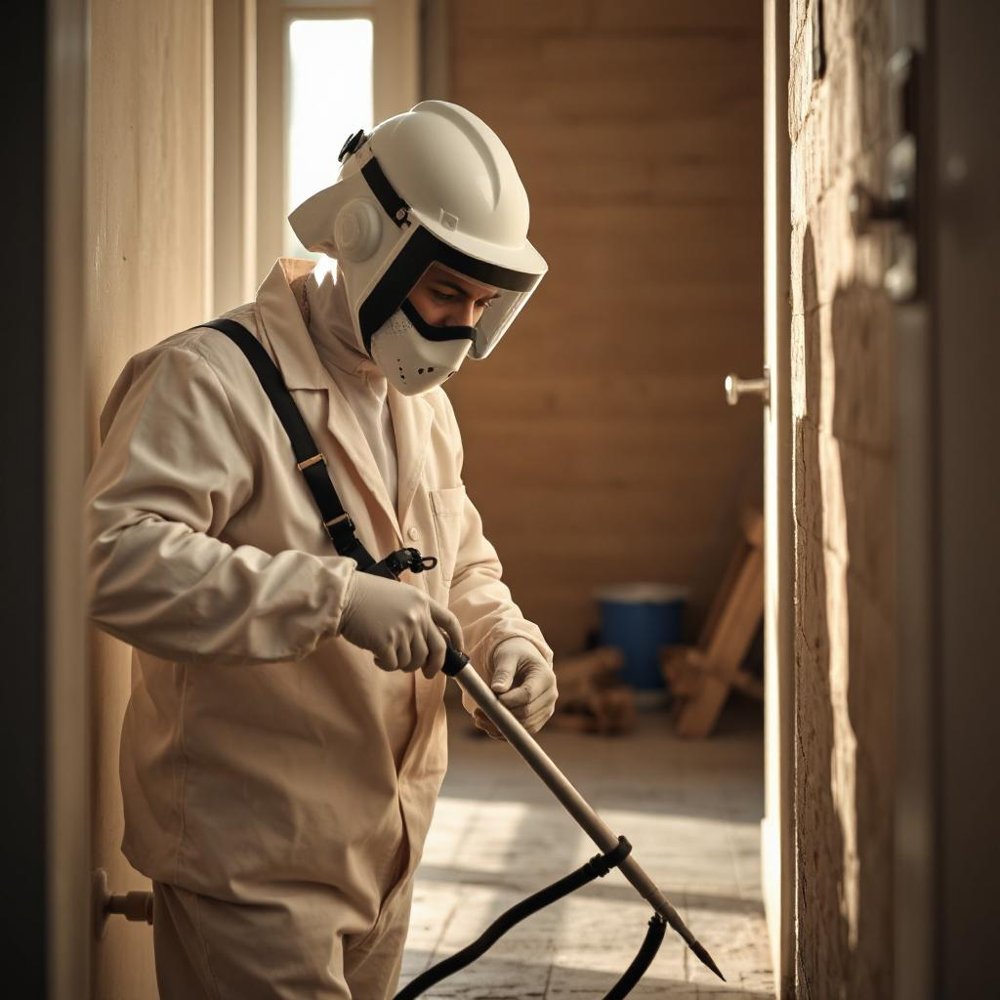
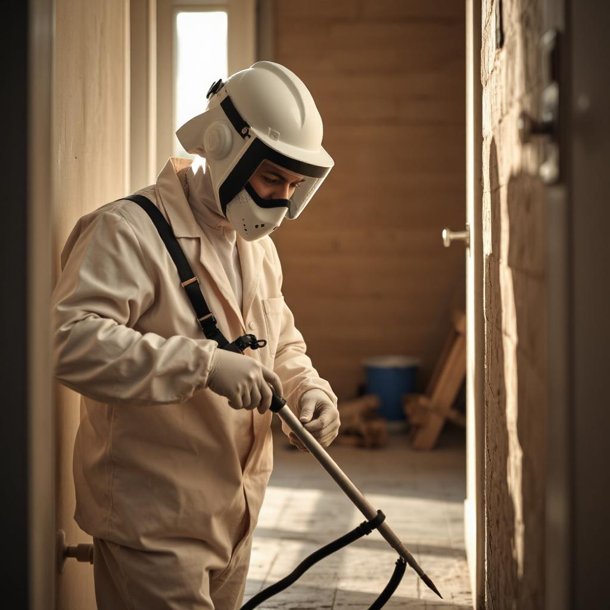

🀠Protégez Votre Espace des Nuisibles
Attrap 13 Nuisible est votre expert en lutte contre les nuisibles.
Nous offrons des solutions efficaces et respectueuses de l'environnement.
En effet, pour éliminer les nuisibles de votre domicile ou de votre entreprise.
Faites confiance à notre expertise pour un environnement sain et sécurisé.


 
